Kagi Translate 使用分享
最近用 Kagi Translate 蛮多的，我觉得使用体验还不错，在这里分享一下。
虽然 Kagi Translate 可以免费使用，但部分功能受限，畅快使用需要订阅 Kagi Professional Plan ($10/month)。
关于 Kagi，你可以看看我之前的文章： 也许你想试试 Kagi？
Kagi Translate 是一个集成了 LLM 的翻译服务，它提供了几个功能：
- Text，输入文字翻译
- Proofread，校对文本
- Dictionary，词典
- Document，翻译文档（TXT、PDF、JSON 等多个格式）
- Website，翻译网站
在 Text 页面你可以直接打开输入内容翻译：
{kind=link}
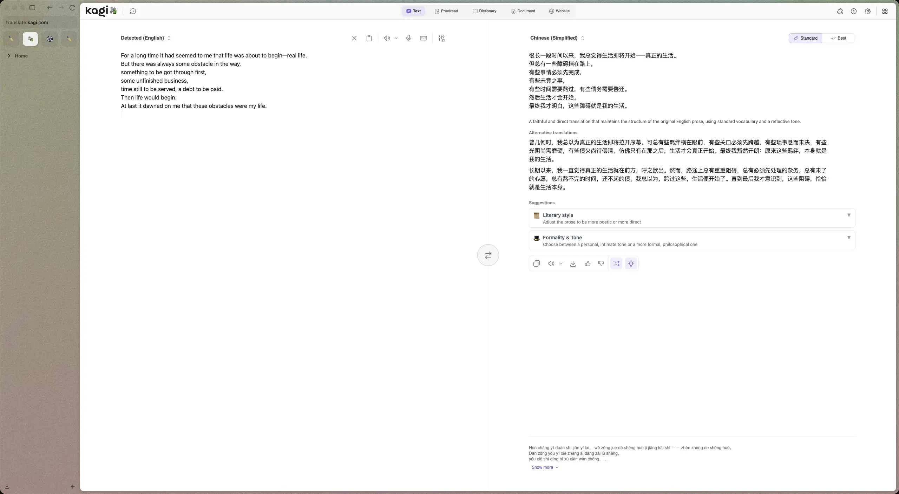
页面上提供了几种替代的翻译作为参考；可以切换 Standard / Best 模式，Best 理论上翻译质量会更好，但耗时会更久；还给出了一些风格和语气上的建议。
如果对翻译结果不满意，还可以跳转到 Kagi Assistant 进一步对话。（不过翻译语言是中文的时候，这个快捷入口没有展示出来）
只输入一个单词的时候，页面上会有详细的单词解释。
{kind=link}
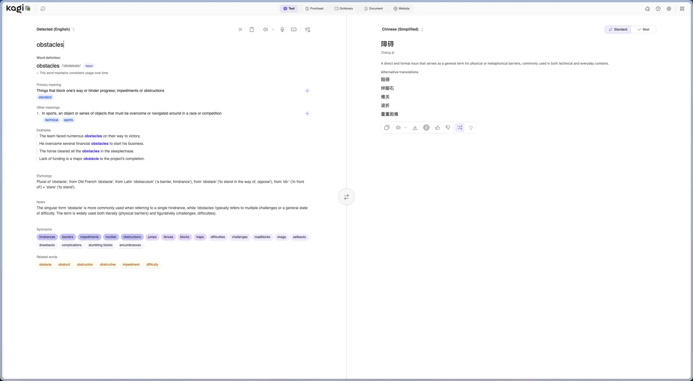
Text 模式下还提供了一些选项，可以调整翻译风格，例如用文言风格、用更口语化的词语、针对读者的性别优化语言、提供进一步的背景信息优化翻译。
{kind=link}
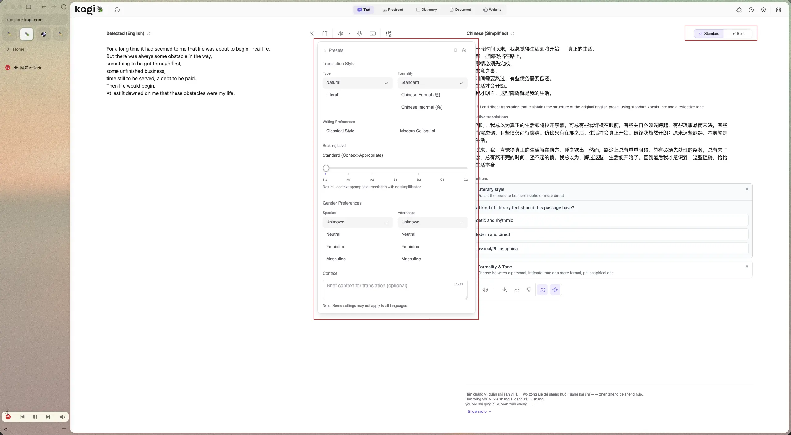
除了常见的语言，它甚至还可以翻译成克林贡语、精灵语（可惜没有发音），或者用 Z 世代、Linkin、Reddit 的语言习惯翻译（Just for fun）。
如果选项中没有你需要的语言，你还可以自定义语言，例如「李白」。 Kagi Translate 也会基于这个语言进行翻译，但因为是非官方的语言，可能不太精确。本质上，自定义的目标语言就是一个 LLM 的 Prompt。(感谢 Eltrac 的分享)
{kind=link}
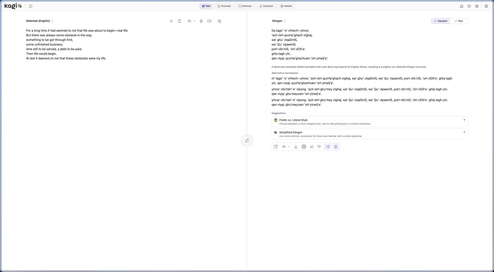
在 Proofread 页面可以输入文字，它会帮你检查语法错误，以及给出一些书写上的建议。
{kind=link}
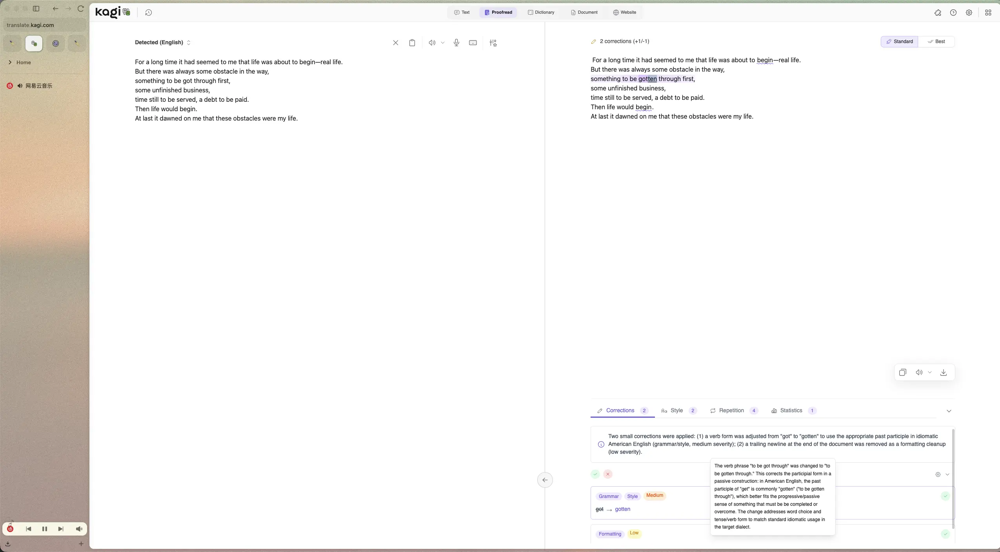
在 Dictionary 页面可以翻译单词，会给出详细的信息，包括了解释、同义词、例句、词源。
{kind=link}
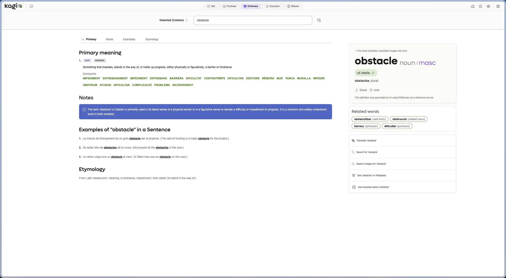
我比较喜欢的一个功能是它可以将信息导出到 Anki，这样就可以累积不认识的单词，有空的时候在 Anki 上复习。阅读英文文章的时候，我会利用 Zen 浏览器 的分屏功能，一侧打开 Kagi Translate 页面，另一侧打开文章阅读，碰到不熟悉的单词就查一下，然后导出到 Anki 里，久而久之就可以形成自己的生词本（不过要经常去复习才真的有用）。略有不足的是，导出到 Anki 的内容不包含发音，有发音会更容易记忆单词。
{kind=link}
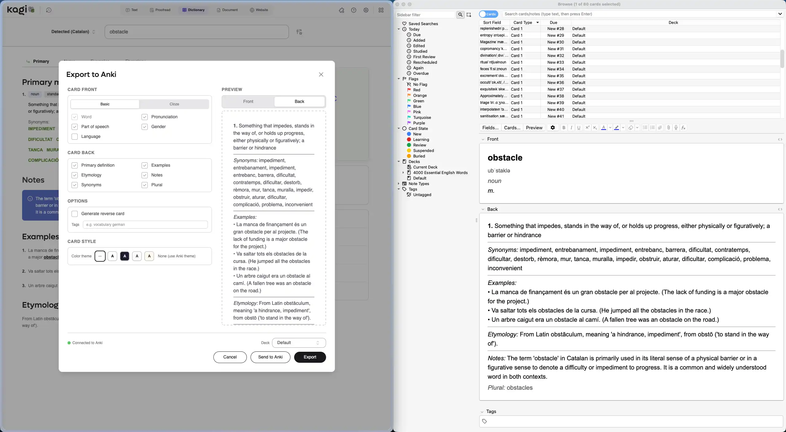
{kind=link}
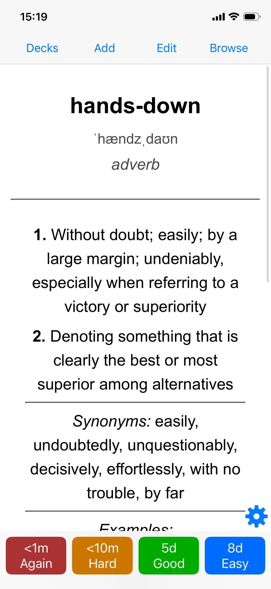
Document 页面可以翻译文档，也可以上传文档进行 Proofread，解析完成后，还支持转换成其他格式。排版还可以，但速度一般。
{kind=link}
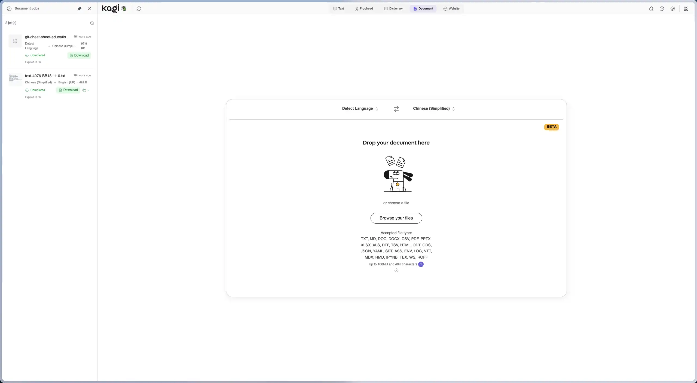
{kind=link}
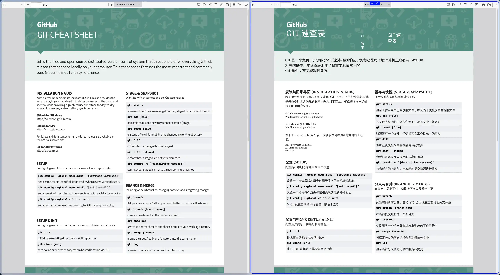
Website 页面可以输入一个网址，翻译成对应的语言阅读。除了在页面上调用，还可以通过 URL、书签 调用。
Kagi Translate URL 使用技巧
在需要翻译的 URL 前面，添加 translate.kagi.com/ 就可以翻译这个页面了，例如 translate.kagi.com/example.com 。
这个设计不错，域名也容易记忆。
如果你在 Emacs 中用 Elfeed 阅读订阅流，还可以添加一个方法，在打开链接的时候添加 translate.kagi.com/ 前缀，这样就能获得一个翻译后的页面了，具体方法见： 在 Emacs 中用 Elfeed 阅读订阅流。
更简单的做法是默认开启翻译功能，只要不是中文都自动执行翻译。
{kind=link}
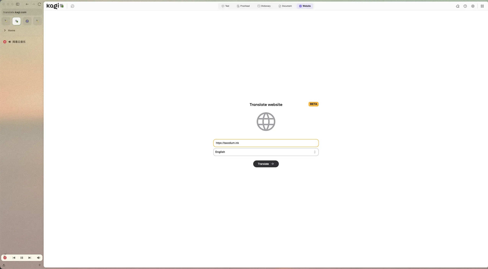
{kind=link}
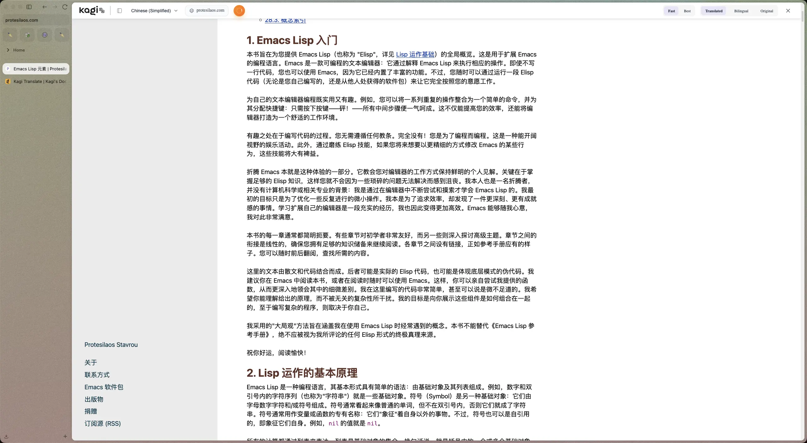
为了方便使用，可以安装 Kagi Translate 的浏览器插件，插件提供了 Text、Dictionary 和 Website 的功能，可以通过快捷键或悬浮按钮快速调用，此外插件适配了一些常用网站，如 Bluesky、Fediverse、Reddit、Telegram 等。插件还做了缓存，当翻译同一个页面的时候，得益于缓存，速度就会快很多。
有时候在一些弹窗中，用悬浮按钮会无法激活 Kagi Translate（可能是点击失焦了，大概是 Bug），这个时候用快捷键触发就好了。
{kind=link}
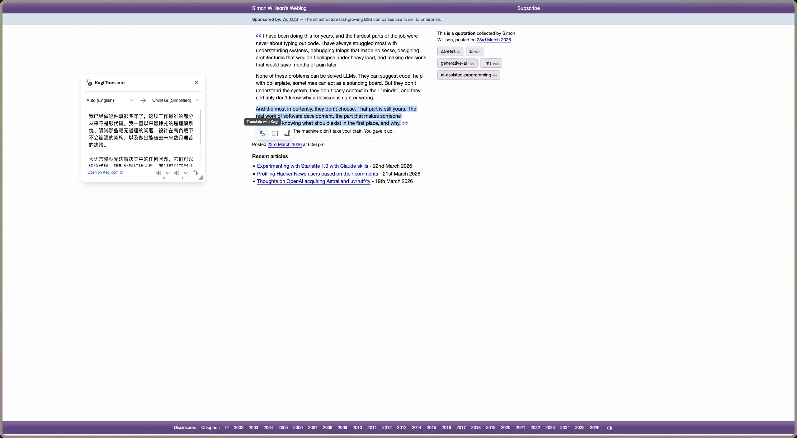
如果你的系统是 iOS，还可以下载 Kagi Translate 的应用，将 iOS 默认的翻译替换成 Kagi Translate，比系统的翻译功能好用。
也可以将默认翻译功能设置成其他翻译应用，都要比 iOS 自带的翻译功能好用。
{kind=link}
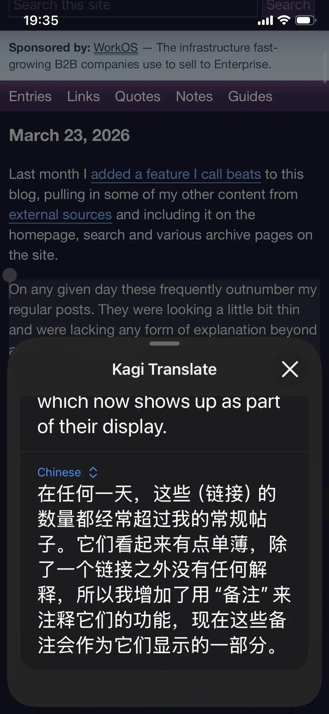
应用上多了一个对话功能 (Conversation)，用于翻译人与人之间的对话，和其他语言的人沟通应该挺好用。我发现另一个使用场景是识别视频的文字内容，有时看动画，有的台词我很喜欢，但没有对应的日文，就可以用这个对话功能来识别。可惜应用上无法将单词存入到 Anki 里。
{kind=link}
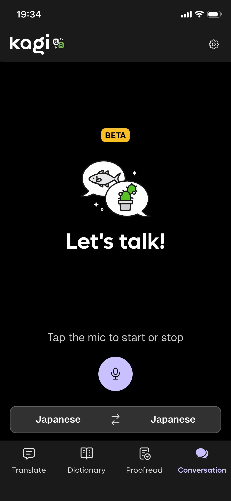
Kagi Translate 还在不断地迭代中，一些功能还处于 Alpha 或者 Beta 测试阶段，使用时可能会不稳定，但大体上不影响使用。
在使用 Kagi Translate 之前，我一直在用 Immersive Translate 阅读英文网页， Immersive Translate 对我帮助很大，让我可以很快速地浏览英文网页，得益于 LLM 有大量的数据训练，翻译的质量也不错。（LLM 更多是直译，如果说人类翻译存在优势的话，那就是恰到好处的意译吧）。
Kagi Translate 能满足我大多数的翻译场景，基本可以替代 Immersive Translate，在翻译句子、单词上甚至还更好。 Immersive Translate 的优势在于可以选择更多不同的模型（有的模型可能会翻译得更好）、翻译的样式；还支持视频中的字幕翻译、翻译图片。
Immersive Translate Pro 版本按月订阅的话要 69 元一个月（按年订阅的话会便宜一些），而 Kagi Translate 是捆绑在 Kagi 的订阅里的，我目前的订阅费用是 10 美元一个月，折合人民币也差不多是 70 元，但除了 Kagi Translate 之外，我还获得了优质的搜索功能、Kagi Assistant，相比之下 Kagi 划算多了，所以等 Immersive Translate 订阅到期我就不会再续费了。
除了 Kagi Translate、Immersive Translate 之外，还有 Read Frog，它是开源版本的沉浸式翻译，需要配置自己的 API key。
过分依赖翻译工具的问题是，打开英文网站总是习惯翻译后再看，很少再阅读英文，久而久之，本就一般的英文阅读能力就越来越差了，所以我决定开始多阅读原文，减少全文翻译的使用。
全文翻译也存在缺点，有的网页精心布局过，尤其是一些交互式的网页，翻译之后往往会影响布局，不如原文的阅读体验好。
小时候其实很多汉字都不认识，也是通过阅读、查字典慢慢扩大了词汇量，然后可以流畅阅读中文。我想英文阅读也是如此，尽可能多阅读英文原文，碰到不懂的单词用 Kagi Translate 查询，然后积累到 Anki 中定期复习，或许能逐渐提高英文阅读能力，有朝一日也可以非常流畅地阅读英文。
不过小时候看书识字是一个循序渐进地过程，而阅读网上的英语文章，有的语言复杂度比较高，英语水平没达到的话，读起来就会很吃力。或许先看一遍翻译，再阅读英语原文会轻松一些（一边阅读一边查字典会让阅读比较割裂）。或者每天选择几篇感兴趣的内容阅读原文积累词汇，其他阅读则借助翻译，在学习和阅读量、阅读速度上找到一个平衡。
提高英语阅读能力，就不需要付费订阅翻译插件，一个月能省掉几十块钱呢。